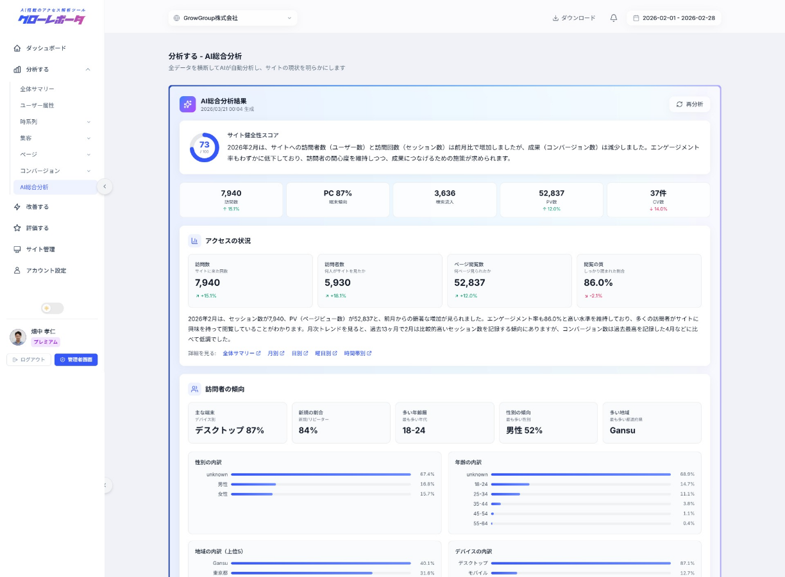
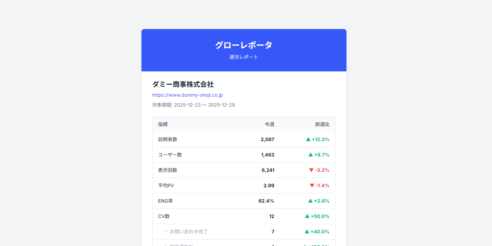
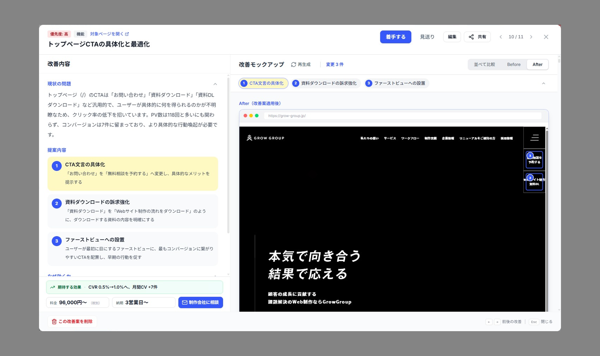

GA4 / Search Console のデータに、業界の標準値と同業の成功事例を AI に掛け合わせて"次の打ち手"まで導く。分析・改善・効果評価のサイクルで、サイトを着実に成長させます。

 Web担当者
Web担当者
 マーケター
マーケター
 経営者
経営者
 制作会社
制作会社
GA4 や Search Console のデータを集めるだけで終わらせません。「分析する → 改善する → 評価する」を AI で一体化。AI がデータを読み解き、業界の標準値や同業の成功事例を踏まえた改善提案を作り、実装後14日で効果まで自動判定。Web 担当者・マーケター・経営者・制作会社が、データの集計ではなくサイト成長そのものに集中できる環境を提供します。
GA4 と Search Console のデータをAIが日本語で読み解き、21以上のビューで多角的に可視化。「数値の意味」が誰にでも伝わるアクセス解析。
業界の標準値や同業の成功事例をAIが参照し、改善提案と実サイトを再現したモックアップ画像までを自動生成。「次の一手」が常に手元にある状態に。
改善実装後のBefore/AfterをAIが自動計測し、達成度まで判定。何が効いたかが蓄積され、次の提案精度がさらに上がっていきます。
Web 制作で長年積み上げてきたサイト運用データを、
AI の改善提案の精度向上に活用しています。
運用する数百サイトの GA4 / Search Console データを毎月集計。業種別の「標準的な水準」を AI が参照し、あなたのサイトを業界の中で位置づけて改善提案を行います。
※ 具体的な数値はお客様画面に表示せず、AI の提案精度向上にのみ使用します。
実際に効果が出た改善施策を、業種・サイト役割で絞り込んで AI が参照。「同じような状況のサイトで何が効いたか」を踏まえた、根拠のある改善提案を生成します。
※ データはすべて匿名で集計済み。個別サイトの特定はできません。
独自のスクリーンショット技術で、動画背景・遅延ロード・JavaScript 実行後のレイアウトまで実サイトと同等に再現。AI が現状を正しく把握した上で、的を射た改善提案を作ります。
専門知識がなくても、データに基づいた意思決定ができる環境をつくります。
週次・月次レポートはAI考察つきで自動的にメールに届き、大きな変化があれば原因仮説つきのアラートも届きます。GA4やアプリを毎日開く必要はありません。じっくり見たい時は21以上のビュー（日別・曜日・時間帯・チャネル・キーワード・ページ・ユーザージャーニーなど）を開けば、すべてのビューにAI考察がついています。

改善案を作るだけでは終わりません。動画背景や遅延ロード、JavaScript実行後のレイアウトまで再現したAfterモックアップ画像をAIが自動生成。チームや経営層に提案を見せる時にも実装後のイメージがそのまま伝わるので、「やる／やらない」の意思決定が早まります。

改善を完了するとサイクルが終わってしまう、ということがありません。改善前の14日間と改善後の14日間のBefore/AfterをAIが自動計測し「期待以上・達成・一部達成・未達成」まで判定。判定結果は次の改善提案の精度向上に活用され、使えば使うほど提案が当たるようになります。

GA4やLooker Studioでは実現できない、
AIによる分析・改善・評価の一気通貫を実現します。
分析から改善、効果測定まで。
サイト運用を「続けられるもの」に変える機能を揃えています。
「先月のCV減少の原因は？」と聞くだけ。GA4 / GSC / 前年同月の全データを AI が参照して対話形式で分析。画像・Excel・PDF も添付可能です。
GA4やSearch Consoleの複雑なデータをAIが自動で読み解き、日本語レポートにまとめます。
目的を選ぶだけで、業界の標準値や同業の成功事例を踏まえた改善提案と、実サイトを再現した After モックアップ画像まで AI が自動生成します。
大きな変化を AI が原因仮説つきでメール通知。週次・月次レポートも AI 考察つきで自動配信されます。
改善実装後、Before/After を AI が自動計測し「期待以上・達成・一部達成・未達成」を判定。何が効いたかを次の提案精度向上に活用します。
Excel・PowerPoint形式にワンクリックで変換。グラフやAIコメント入りの報告資料が数秒で完成。
日別・曜日・時間帯・チャネル・キーワード・ページ・ユーザー属性・ジャーニーなど多角的に可視化。各ビューに AI 考察がつきます。
入口 → フォーム → 完了 までの到達率をステップごとに可視化。離脱が大きいページが一目で分かり、改善の優先順位が明確に。
オーナー / 編集者 / 閲覧者の 3 ロール + サイト別アクセス制御に対応。制作会社・代理店が複数クライアントをまとめて管理できます。
同業の標準値と成功事例を AI が参照し、あなたのサイトを業界の中で位置づけて改善提案します。
月次データ更新と連動して新しい改善提案を AI が自動生成。古くなった提案は鮮度に応じて自動アーカイブされます。
サイトを登録すると AI が業種・ビジネスモデル・サイト役割を自動判定。ベンチマークや成功事例の参照精度が向上します。
※ AIチャット・AI総合分析・AI改善提案+モックアップ・改善の効果測定・レポート出力・業界ベンチマーク AI・改善案の自動更新はビジネスプランのみの機能です。
無料プランでアクセスデータを確認。
ビジネスプランでAIの力を最大限活用。
お申し込み月は無料。翌月1日から課金開始。
含まれる機能
含まれる機能
グローレポータを導入いただいた企業様から、
多くの喜びの声をいただいています。
「GA4は導入していたものの誰も見ていなかった状態でした。グローレポータを入れてからは、AIが自動で分析を届けてくれるので、データに基づいた判断ができるようになりました。」
製造業
「以前は外部コンサルに月10万円以上払っていましたが、同等以上の分析がこの価格で。改善提案からモックアップまで出てくるので、制作会社への指示もそのまま使えます。」
広告代理店
「複数クライアントのサイトをまとめて管理でき、レポートもワンクリックで出力。分析→改善→評価のサイクルがクライアントごとに回せるのが強みです。」
Web制作会社
「専門知識がなくてもAIが分かりやすく解説してくれるので、数字を見て終わりにならない。異変があればメールで通知が届くので、わざわざ管理画面を開く必要もありません。」
小規模企業 代表取締役
グローレポータに関するよくあるご質問にお答えします。
はい、まったく問題ありません。難しいGA4の画面を自分で見る必要はなく、サイトのURLを登録してGoogleアカウントで接続するだけ。あとはAIが「何が起きているか」「どうすればいいか」をわかりやすい日本語で教えてくれます。
無料プランでは、GA4/GSCのデータ閲覧やアラート通知をご利用いただけます。ビジネスプランにアップグレードすると、AI分析サマリー・AI改善提案・AIチャットが無制限で使え、改善タスク管理・効果測定・レポートエクスポートなど全機能が開放されます。
ご安心ください。Googleが提供するセキュリティ基盤の上で動いており、お客様のデータは暗号化して保管しています。また、Googleアカウントでの連携方式のため、GA4のパスワードをお預かりすることは一切ありません。
外部のコンサルタントに頼むと、月10万円以上かかることも珍しくありません。しかもレポートは月に1回届くだけ。グローレポータのビジネスプランなら、好きなときにAI分析ができて、「こうすればサイトが良くなる」という具体的な提案や改善イメージまで自動で作ってくれます。
解約は1ヶ月前にお申し出ください。一括払いの場合は消化月単位で精算し、未消化分を返金いたします。登録データの削除をご希望の場合は、お気軽にお問い合わせください。
はい、チームメンバーをメールで招待して、一緒に使うことができます。「編集できる人」「見るだけの人」と権限を分けられるので安心です。Web制作会社さんがお客様のサイトをまとめて管理して、レポートを納品するといった使い方にも対応しています。無料プランは3名まで、ビジネスプランはメンバー無制限です。
サイトのアクセスデータに基づいて、自由に質問できます。例えば「先月のCV減少の原因は？」「SEOで改善すべきページは？」「今月のトレンドを教えて」など。GA4 / Search Console / 前年同月のデータを AI が参照して、グラフや表を交えて回答。レポート作成にもそのまま活用できます。ビジネスプランで無制限にご利用いただけます。
Grow Group が運用する数百のサイトから集計した、業種・ビジネスモデル・サイト役割ごとの「標準的な水準」を、AI 改善提案の参考データとして活用する仕組みです。具体的な数値はお客様の画面には表示せず、AI が「業界の中でどの位置にいるか」を踏まえた提案を生成するためにのみ使用します。詳しくは利用規約第7条をご覧ください。
いいえ。お客様が連携した GA4 / Search Console のデータは、お客様ご自身の分析にのみ使用されます。業界ベンチマーク等の集計には Grow Group が運用受託している顧客サイト（同意取得済み）のデータのみを使用しており、本サービスご契約者のデータは集計対象には含まれません。詳しくは利用規約第7条をご覧ください。